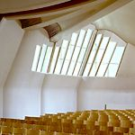

By Deborah Lewittes
| The Alvar Aalto exhibition at The Museum of Modern Art takes its title, “Between Humanism and Materialism,” from a lecture Aalto (1898-1976) delivered to the Vienna Architects' Association in 1955. As implied by the title of his talk, Aalto urged architects in the fifties to embrace a “betweenness” of opposites. They should search for an architectural language that worked comfortably with tradition and with the new, with nature and with mechanization, and with flexibility and standardization. It is Aalto's synthesis of seemingly incompatible elements, reconcilable only through art, Aalto claimed, that provides the touchstone for MoMA's show, curated by Peter Reed, an Associate Curator in the Department of Architecture and Design. The exhibition, which celebrates the hundredth anniversary of Aalto's birth and coincides with the fiftieth anniversary of another Aalto show held at MoMA, aims to reveal this sense of integration. Almost every Aalto innovation was accompanied by a deep connection to the vernacular forms and landscape of his native Finland; every functional element engaged in an interplay with the organic; and every modernist detail was balanced by a reference to (and reverence for) the classical past.
The roughly chronological flow of the exhibition focuses on forty-five buildings and projects that span Aalto's career and are presenting these architectural works through sketches, drawings, models, photographs, and videos. The show also takes welcome detours along the way to include examples of his furniture and glassware designs and full-scale constructions of his specially-developed brick and tile wall systems. It begins with an early student project from 1917, an unbuilt design for a cafe whose ornateness soon gives way to work that reflects a starker use of line. The exterior of his Jyväskylä Workers' Club (1924-25), for example, is a pared-down, austere white cube with classical references, and his Turun Sanomat newspaper building (1928-30) furthers this shift towards a regularized, unornamented, volumetric approach to architecture. In fact, these particular characteristics define the concept of modern architecture that Henry-Russell Hitchcock and Philip Johnson were to identify shortly afterwards in their landmark 1932 MoMA exhibition, “The International Style: Architecture Since 1922.” An attempt to codify modern architecture for the American public, the "International Style” show included Aalto's Turun Sanomat building and praised its surfaces, forms, and proportions. Some of the most wonderful pieces in the Aalto show include the sketches and samples of his famous undulating vases, introduced to the public at the 1936-37 Paris World's Fair, several of his chairs, such as the Paimio Chair (1931-32) and its accompanying renderings, and his anthropomorphic stackable stools. MoMA has displayed the stools in a tall stack that almost reaches the gallery ceiling, not only proving how functional their design is, allowing for maximum storage space, but also presenting them as sculptural objects. This autonomous quality also characterizes his later models such as that for the Maison Carre (1956-59), whose abstract, organic, monochromatic forms reveal themselves more as surrealist sculptures than as working architectural models. Aalto's more canonical architectural works receive varied types of treatment. Large, aerial photographs of the Paimio Tuberculosis Sanitorium (1929-33) and his later National Pensions Institute (1952-57) animate the powerful role the site clearly played in his designs; we see the way the precise, white lines of the Sanitorium strikingly rise out of the heavily-forested Finnish landscape, and the photograph of the National Pensions Institute emphasizes how remarkably he achieved a sense of quiet harmony within a cramped, irregularly-shaped urban plot. The presentation of the Villa Mairea is initially disappointing, though the later video walk-through more than compensates, while the model of Säynätsalo Town Hall, commissioned and constructed for this show, potently conveys the warmth and richness of much of Aalto's work.  picture from MoMA Web Site The Finnish Pavilions Aalto designed for the 1936-37 and 1939 World's Fairs, in Paris and New York respectively, are among his most well-known works, and the fluid interior of the latter, with its moving projections of pictures, must have been quite theatrical. Aalto explained that he wasn't trying to convey a mere image of Finland, but wanted to evoke its atmosphere by providing a totalized environment that would stir the visitor's senses on a deep level. This treatment of the 1939 Pavilion as a Gesamtkunstwerk that would elicit profound responses led Frank Lloyd Wright, the wall text indicates, to call Aalto a genius. It is information like this, and more pointedly, the attitude behind the decision to include it, that highlights a problem in the show's conception and unfortunately colors Aalto's work. To complain about Wright's alleged approval of Aalto may appear to be an irrelevant quibble, but it actually directs us to a larger issue. The exhibition seems compelled not so much to show Aalto's special place in the history of the modern movement in architecture, but to validate him by giving him an official, accepted modernist pedigree, as if his work on its own isn't enough. The fact that Frank Lloyd Wright, the master himself, identified Aalto's difference - that is, his status as genius - not only functions as a green light for the rest of us to see Aalto's greatness, but it also delivers us that greatness once-removed, via Wright, or rather Wrightian hearsay, instead of via Aalto's own attempts and achievements. Surely these are much more interesting than anything anyone, even Frank Lloyd Wright, could have said about them. The unwillingness to let Aalto stand on his own forms an unspoken structuring device to the show that is both secondary to and hidden behind - yet curiously intertwined with - the actual, stated structuring device of the show, which is Aalto's integration of opposites, as discussed earlier. If we momentarily backtrack to the beginning of the exhibition, the introductory wall text closes with the following statement that in effect qualifies the entire exhibition that is to follow: “The exhibition conveys the scope of Aalto's work and ideas in a variety of mediums [sic]...intended to communicate something of the power of his architectural work, which can otherwise be experienced only by visiting an Aalto building.” Surely this comment is meant purely rhetorically, but in essence, Peter Reed is apologizing for what he sees is the inadequacy of his exhibition. And it is with this valedictory disclaimer that we are sent off into the galleries. Of course what Reed is alluding to is particular neither to this exhibition nor more specifically to Aalto, but rather is a general fact that confronts all museum and gallery displays devoted to built works. Reed has taken this standard challenge as an opportunity to create for himself his own binary construct that parallels the show's through-line. Just as Aalto engaged polar opposites such as “humanism”/“materialism,” Reed must resolve “museum show”/“site visit.” The crucial difference, though, is that Reed seems to see each pole of the binary as a constraint. He has fashioned himself the victim of an either/or situation that forced him to make a distinct (and, he laments, a lesser) choice. This resignation stands in stark contrast to Aalto, who may have also found himself between opposites, but who navigated the “betweenness” as a strategy of liberation, transcending the rigid limits of an either/or system and enabling the resulting holism one clearly senses in his work. In MoMA's exhibition, Aalto's intricate resolutions become reconfigured under a curatorial conceit of compromise that needlessly undermines a strong exhibit. The show begins with regret lingering in the air, but Reed offers us the solace that at least Frank Lloyd Wright approved. A very different portrait of Aalto emerges from a companion exhibition at the Bard Graduate Center for Studies in the Decorative Arts on West 86th Street, called “Finnish Modern Design: Utopian Ideals and Everyday Realities, 1930-1997” (February 27-June 14, 1998), organized by Nina Stritzler-Levine. This show aims to contextualize Aalto within a modernist aesthetic identified as “distinctly Finnish." It's not that MoMA has ignored the importance of Finland in Aalto's work. To the contrary, his many regional planning schemes for specific areas of Finland are featured, and certainly the influence of his heritage is often addressed, but from a primarily formal angle. The “MoMA-Aalto” could almost have developed into the same Aalto we know today had he been born and raised anywhere, as long as he still met up with Le Corbusier, Walter Gropius, and Moholy-Nagy in 1928, as that exhibition tells us he did. The “Bard-Aalto” developed as he did not because of his contact with the rest of Europe, but precisely because of Finland's “uniqueness of remoteness” and Aalto's deep immersion in the cultural debates raging throughout the Finnish design community in the 1920s-30s. The wall text at Bard indicates that "contemporary design discourse in Finland was largely dominated by the conflict between progressive and traditional designers.” Whereas Reed at MoMA poeticizes the contradictions that guided Aalto and normalizes him to fit into the modernist paradigm populated by Corb and Gropius, Stritzler-Levine at Bard emphasizes Finland's more active, politically-driven contribution to Aalto's ethos, and the resulting impression is dynamic and rigorous. While both versions of the story complement each other, in the end Bard's desire to present Aalto on his own terms, without justification from a more generalized master narrative of modernism, helps fill a wide gap the MoMA show leaves unacknowledged. Part of the reason the MoMA exhibition leaves us with a soft image of Aalto, as opposed to the more polemical Aalto that Bard reveals to us, is that MoMA has sanitized its representation of Aalto's social program. Similarly, the 1932 “International Style” show mentioned earlier also performed a conscious cleansing act, emphasizing the style of modern architecture, not its associated socialist politics, so as not to have jeopardized its acceptance in America. If Peter Reed was so intent on placing Aalto into the standard modernist trajectory, then he could have offered a more complete look at Aalto's involvement with housing. A concern for housing is arguably a main component of European modernism, and within that, one could still find a way to emphasize Aalto's difference from his contemporaries because so many of his projects were actually built. Furthermore, Aalto attended several C.I.A.M. meetings, including the 1929 Frankfurt meeting devoted to the Existenzminimum and the 1933 meeting that was to result in the Athens Charter, but he distinguished himself early on by renouncing the rationalized schemes in favor of his own solutions. These aspects of Aalto are rarely discussed. Lastly, it is fascinating that the largest social housing project ever planned in the Federal Republic of Germany was designed by Aalto, in Bremen (1958-62). Modernism's history of the twentieth-century's continued search for affordable mass housing is most readily attached to Germany, and it seems that Aalto's involvement with this project, combined with his other housing solutions and designs, could have formed a more focused and analyzed section of the exhibit. Whatever weaknesses Reed may discern in conventional methods of display are effectively countered by the video walk-throughs included in the show. Each video leads us on a choreographed architecturale promenade through and around one of five buildings - the Sunila Pulp Mill (1936-38), the Villa Mairea (1938-39), the Experimental House and Sauna (1952-53), the National Pensions Institute (1952-57) and the Church of the Three Crosses (1955-58) - and help us begin to sense and discover the total environment Aalto spoke of in reference to his 1939 Finnish Pavilion in New York. In each video, the camera slowly and deliberately pans through the interiors and around the site, hovering over the materials, shapes and textures of the architecture. We watch as the camera at the Pulp Mill dramatically climbs the smokestacks and treats the smoke as merely another element in the landscape. Nearly silent, except for carefully chosen moments in which gentle sounds of running streams and chirping birds are peacefully collaged into the visuals, these videos are beautiful, serene, formal, film-like works that spatialize Aalto's sensitivity, working method, and philosophy. |
|
| As a final note, neither Aalto's work nor MoMA's elegant show need any disclaimers, and it is regrettable that Peter Reed seems to have reservations, second-guessing the combined effect of a very diverse presentation. The exhibition should be seen as being completely different from, not inferior to, a site visit. Granted, much of the literature on Aalto's work has focused on the qualities of his architecture that are unknowable through photographs, and Reed has become trapped by this myth. Reyner Banham's classic The New Brutalism: Ethic or Aesthetic? (1966) mentions the significant influence the tactility of Aalto's Säynätsalo Town Hall (1948-52) had on the later brutalist works of, for instance, Peter and Alison Smithson and Louis Kahn, and Kenneth Frampton's important essay "Towards a Critical Regionalism: Six Points for an Architecture of Resistance" (1983) emphasizes the way Säynätsalo liberates our usual reliance upon vision by asserting its “status through sound, smell and texture," conditions that of course no photograph, model, or video can substantively address. Elsewhere Frampton has written that a reliance upon glossy, staged architectural photographs diminish our appreciation of a building we might later visit (Modern Architecture, 1992), and it is this sort of hierarchy that has inhibited Reed. Frampton's formulation depends upon the difference between the photograph and our experience of the place in the photograph, and he privileges the latter, but we can inflect the difference more positively. For Barthes, a photograph was special because the object in the photograph had to have existed in the physical world at the time the picture was taken. “The thing has been there,” he insists (Camera Lucida, 1981). The intractability of the referent defined the photograph as distinct from any other form of representation, such as painting. If we can reconceive Frampton's schema by means of Barthes, then the photograph of an Aalto building is not diminished by the building, but instead receives a pa rticular status from the building. Its uniqueness, not weakness, is derived by virtue of its being a photograph. Through this new configuration, MoMA's Aalto show can be seen as yielding its own rewards, site visit or not. | |